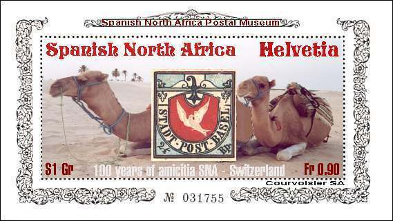
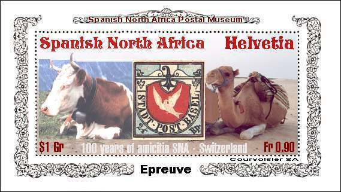
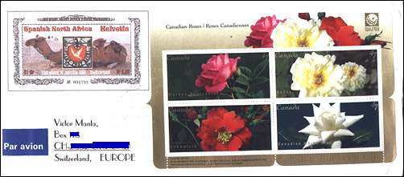
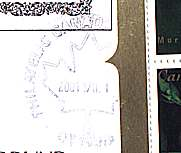

I have
offended God and mankind because my work did not
reach the quality it should have (Da Vinci's dying words)
The image below shows another perfect joint issue, designed by the author of this site. The sheet was ordered by and delivered just in time for the beginning of spring to the SNA postal administration. This country is today quite well known, especially to the participants at the philatelic newsgroup RCSD (rec.collecting.stamps.discuss). You can and eventually should find out more about the SNA, its history, and its stamps by clicking here (still in work).

The above miniature sheet, greeted with applause by the philatelic on-line community, was officially launched the 21st of March 2001. The print run was limited to 1,000,000 pieces, the exemplar with the No. 000,000 being conserved at the SNA Postal Museum and that with the No. 999,999 being sent to the UPU.
The sheet was sold-out already during the first day of issue and it's not available anymore, neither on the primary nor on the secondary philatelic markets. It was printed using a very innovative and complex sand & stone lithography process, in 10 colors, by the printing office Courvoisier SNA, in Ciedad de Leon, under the supervision of Courvoisier SA in Switzerland. The complexity of the process, like in the case of the Swiss embroidery stamp, doesn't permit for the resuming of the printing, even if the worldwide demand remains very high. The sheet was valid for franking (till the 1st of May 2001) as well in Switzerland as in the SNA, that's why it belongs to the rare group of perfect joint issues worldwide, in pair with with the joint issues Liechtenstein Scott No. 1055 + the Switzerland Scott No. 960, and with the Romanian (Sc. 1747) - Yugoslavian (Sc. 771) sheet issued in 1965.

The printing office Courvoisier SA, closed in April 2001, has started with selling of interesting documents from its archives. Please see below an essay of the renown joint issue SNA-Switzerland. The sheet, shown above, was recently acquired by the SNA government. It can be admired in a special room of the SNA Postal Museum. The reasons for which this interesting design wasn't accepted are still unknown, but some recent researches have established that the design was possibly rejected due to opposition of the powerful SFA (Swiss Farmers Association) lobby.
Reactions to this issue
-
From RCSD. It is my pleasure to announce that the first signatory to the SNARDPS (SNA Roll of Distinguished Philatelic Satirists) will be Victor Manta of Switzerland! Congratulations, Victor! Neil S. Hawk. 1st of August 2001.
-
From Canada. Superb letter sent from the Consulate-General of Spanish North Africa in Canada by the General Consul, Honorable Blair Stannard. Both sheets cancelled by a common cancel on 2001.VII.1, in Ottawa (please look at details below, on the right). Rare SNA letter from site author's personal collection.
 |
 |
Links:
|
|
|
|